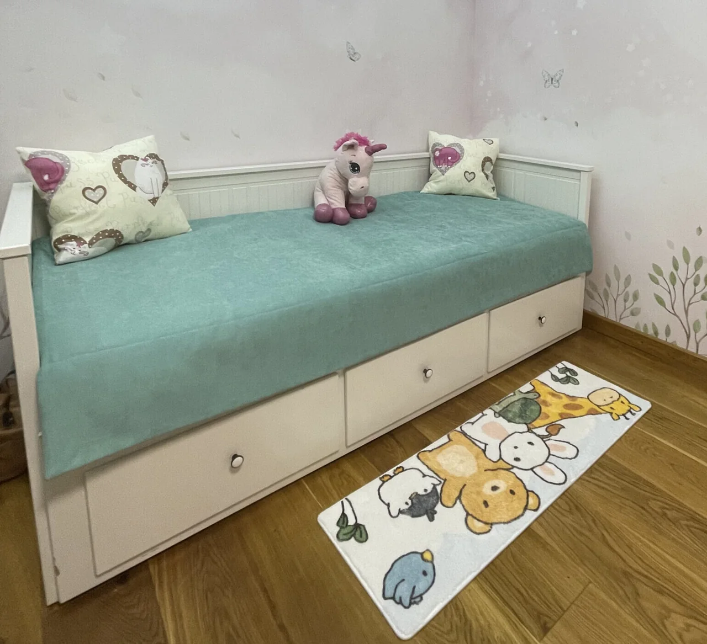

Фотография мастерской
Обработка покрывала крупным планом
Изнанка, подкладка и край изделия. Такие детали удобно рассмотреть перед обсуждением собственного заказа.
Мастерская Татьяны Драйдт · Королёв
Покрывала, подушки и детали в одной палитре со шторами, мебелью и вашим настроением.
Обсудить мой проект ↗
Шьём покрывала, декоративные подушки, чехлы и скатерти. Можно дополнить существующий интерьер или подобрать текстиль одновременно со шторами.
В спальне обсудим размеры кровати и желаемый свес покрывала. Для подушек — форму, размер, фактуру и сочетание оттенков. Для скатерти — размер стола и особенности использования.
Фото комнаты помогает увидеть цвета мебели и стен. Образцы ткани позволяют оценить оттенок и фактуру при вашем освещении. Состав заказа и обработку деталей согласуем до пошива.
Цена зависит от размеров, количества изделий, материалов и сложности работы. Для предварительного обсуждения пришлите фото и список того, что хотите оформить. Посмотреть примеры можно в портфолио.
Начните с фотографии окна и комнаты. Расскажите, нужна ли защита от света, есть ли карниз и какие оттенки вам нравятся. Это поможет подготовиться к обсуждению.
Затем согласуем замер, посмотрим ткани в интерьере и определим модель. Стоимость и состав заказа фиксируем до пошива. Готовый текстиль доставляем и навешиваем; необходимые работы с карнизом обсуждаем отдельно.
Реальные проекты мастерской
Изнанка, подкладка и край изделия. Такие детали удобно рассмотреть перед обсуждением собственного заказа.
Серая и зелёная стороны покрывала позволяют менять образ кровати. Размеры изделия подобраны под неё.
Первый шаг — знакомство с вашим интерьером
Напишите Татьяне и отправьте фото комнаты либо позвоните в мастерскую. Обсудим оформление и данные для расчёта.
Пришлите фото комнаты в мессенджер или позвоните. Обсудим модель, ткань и данные для расчёта. Условия выезда и замера согласуем при обращении.
Мастерская в Королёве. Работаем с интерьерами в Москве и Московской области.